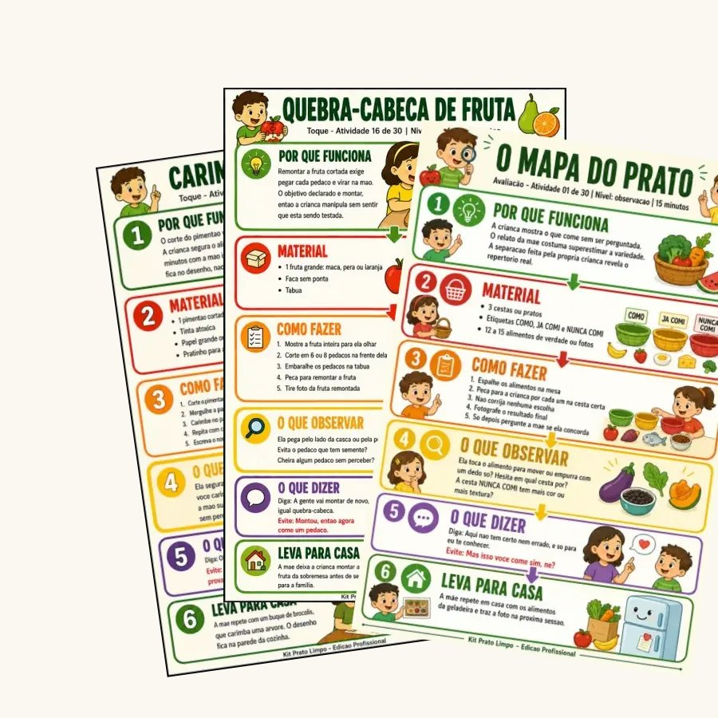
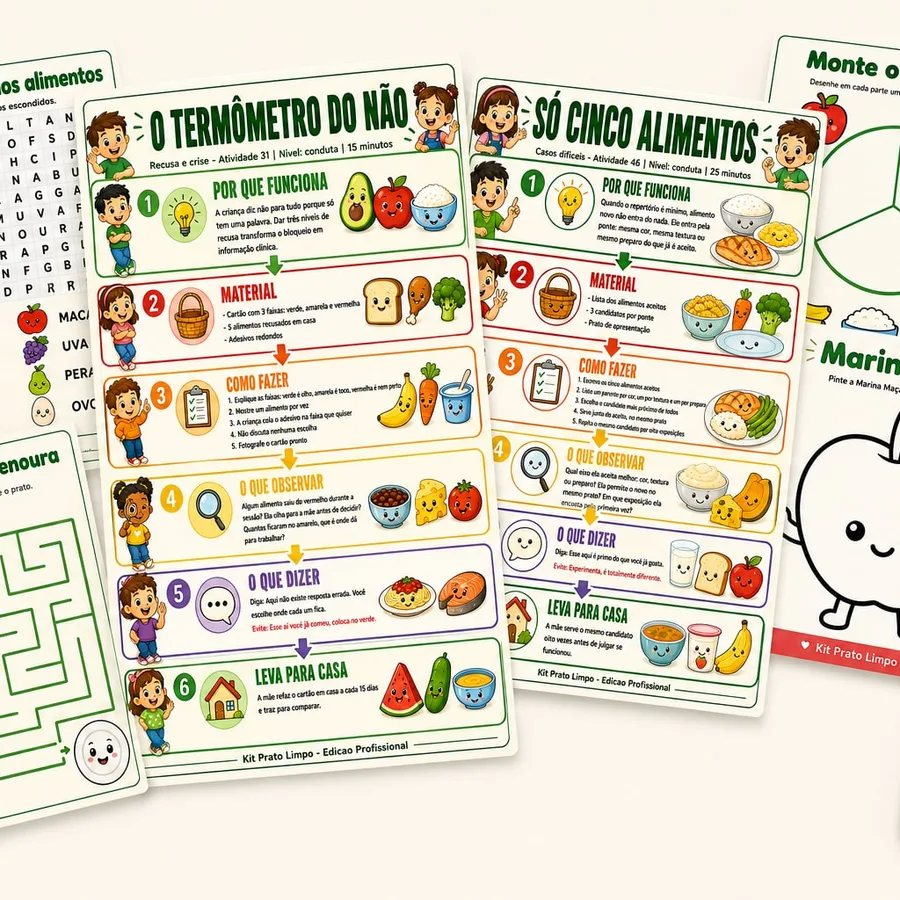
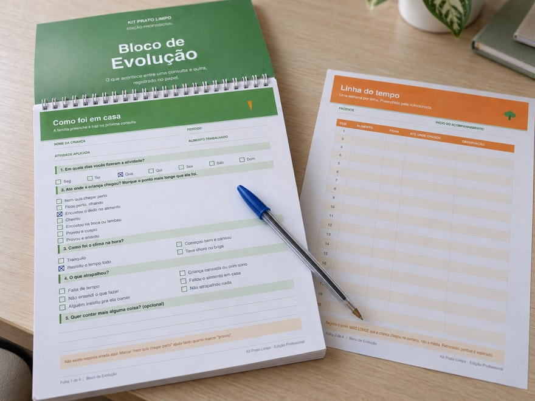

Está escrito dentro do material, na terceira página.
✓Imprimir quantas cópias precisar
✓Entregar as fichas impressas ao paciente
✓Passar o link do aplicativo para a família instalar no celular
✓Aplicar em atendimento individual ou em grupo
✓Usar em oficinas e palestras que você conduzir
✓Sem limite de pacientes e sem prazo de validade
✕Revender, compartilhar o arquivo ou publicar as fichas
Vale a pena?
Quanto custa o seu tempo de preparo
Montar uma atividade do zero para um paciente leva entre 20 e 30 minutos. Você não fatura esse tempo.
No primeiro paciente o kit já se pagou. E ele não acaba: são 189 fichas e um aplicativo para atender quantas crianças aparecerem, por quantos anos você quiser.
Uma consulta paga o kit inteiro e ainda sobra.
🛡️
7 dias de garantia incondicional
Aplique com os seus pacientes sem risco. Se sentir que não é para você, devolvemos 100% do valor. Sem pergunta, sem burocracia.
189 atividades em PDF Para imprimir ou abrir na tela · sem aplicativo

VOCÊ RECEBE:
✅60 fichas de consultório, em 12 etapas
✅129 fichas para a família levar pra casa
✅Licença de uso com seus pacientes
✅Acesso imediato, em PDF
➖Sem o aplicativo
De R$ 49,90 por:
R$ 27,90
Você economiza R$ 22,00
🛡️ 7 dias de garantia
⚡ Mais completo
PLANO COMPLETO
189 atividades + aplicativo Para a criança e a família continuarem entre consultas

VOCÊ RECEBE:
✅60 fichas de consultório, em 12 etapas
✅129 fichas para a família levar pra casa
✅Licença de uso com seus pacientes
EXCLUSIVO DO PLANO COMPLETO
📱Aplicativo com a aba Consultório no tablet
APP DA FAMÍLIA · 4 ABAS
🎲 JogarRoleta sorteia a missão do dia👥 TurmaMarque os personagens provados🖍️ PintarPinte com o dedo no celular🏠 FamíliaTodas as fichas para casa
📅Calendário, cartelas e quadro de progresso
🆕Atualizações do material, sem pagar de novo
De R$ 67,00 por:
R$ 37,00
Você economiza R$ 30,00Só R$ 9,10 a mais que o Básico
Pagamento único, sem mensalidade. Atualizações incluídas nos dois planos.
Seus dados
Escaneie o QR Code
Ou copie o código abaixo no app do seu banco.
—
Aguardando o pagamento...
Assim que o Pix cair, o acesso é liberado nesta tela e enviado por e-mail.
Pagamento confirmado 🎉
O acesso à Edição Profissional foi enviado para o seu e-mail. Se não aparecer em alguns minutos, confira o spam ou escreva para kitpratolimpo@gmail.com.
Dúvidas
Antes de decidir
Posso mesmo entregar as fichas para os meus pacientes?
Pode. É exatamente pra isso que existe a licença de uso profissional, e ela vem escrita dentro do material. Imprima quantas cópias precisar, entregue ao paciente, use em grupo e em oficina, sem limite e sem prazo. O que não pode é revender ou publicar as fichas.
Como recebo, e quanto tempo demora?
Logo depois do Pix confirmado, o acesso chega no seu e-mail. No plano PDF + Aplicativo é o link do aplicativo, que já tem dentro o botão para baixar o PDF. No plano Fichas em PDF é o link direto do arquivo. Leva alguns minutos, não é entrega manual.
Preciso de impressora?
Não. Tudo pode ser impresso, e tudo pode ser usado direto na tela do celular ou do tablet. As atividades de pintar funcionam com o dedo.
Serve para criança com autismo?
As atividades trabalham aproximação sensorial em ritmo respeitado, sem pressão para comer, que é uma abordagem comum no acompanhamento de crianças autistas com seletividade. Mas quem decide o que cabe em cada caso é você, dentro da sua conduta e do seu plano terapêutico.
É assinatura?
Não. É pagamento único, nos dois planos. Você continua com o material e recebe as atualizações sem pagar de novo.
Antes de gerar seu Pix
Quer acompanhar a evolução entre as consultas?
Bloco de Evolução: acompanhe o progresso entre as consultas com registros da criança e dos pais em um checklist semanal simples. Adicione por mais R$ 10,00.

✓Como foi em casa (criança e pais registram juntos)